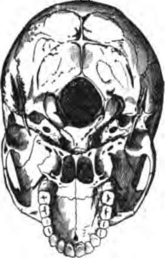

Peculiarities Of The Human Skeleton
Description
This section is from the book "The Human Body: An Elementary Text-Book Of Anatomy, Physiology, And Hygiene", by H. Newell Martin. Also available from Amazon: The Human Body.
Peculiarities Of The Human Skeleton
There are some interesting points in the structure of the human skeleton, connected with our power of maintaining the erect posture, and of progressing on the feet so that the hands are left free for grasping. In no other vertebrate is the division of labor between the anterior and posterior limbs carried so far; the highest apes often use the hand in locomotion and the foot for prehension. As characteristic of man's skeleton we may note:
1. The skull is nearly balanced* on the top of the vertebral column (Fig. 20) so that but little effort is needed to keep the head erect. In four-footed beasts the skull, being carried on the front end of a horizontal backbone, needs special ligaments and considerable muscular effort to support it; in apes the skull does not nearly balance on the top of the spine ; its face is much heavier than its back part, while in men the face bones are relatively smaller and the cranium larger. To keep the head erect and look things straight in the face " like a man " is far more fatiguing to monkeys, and they cannot maintain that position long.
Are toes or fingers more mobile ? How does the thumb differ in this respect from the great toe? What reason have we to think that the shoe has produced this effect ? In what animals is the great toe more movable? What power have their feet in consequence? Can we make our toes more movable by practice ? Illustrate.
With what facts are the more marked peculiarities of the human skeleton connected? In what living creature is the division of labor between arms and legs carried farthest ?
Does the skull of man nearly balance on its support?
* The balance is, however, not quite complete. When any one goes to sleep in an ill-ventilated lecture room he is usually awakened by a sharp jerk down wards of his chin. The muscles concerned in holding the head erect having relaxed their vigilance the greater weight of the froat halt of the skull exerts its effect.
Fig. 20. The base of the skull. The lower jaw has been removed. At the lower part of the figure is the hard palate forming the roof of the mouth and surrounded by the upper set of teeth. Above this are the paired openings of the posterior mires, and a short way above the middle of the figure is the large median foramen magnum, with the bony convexities (or occipital condyles) which articulate with the atlas, on its sides. It will be seen that the part of the skull behind the occipital condyles is about equal in size to that in front of them ; in an ape the portion in front of the occipital condyles would be much larger than that behind them.
2. The human spinal column, when viewed from the front, is seen to widen gradually from the neck to the sacrum, and so to be well fitted to sustain the weight of the head, upper limbs, etc, carried by it. Its curvatures, which are peculiarly human, add greatly to its spring and elasticity; were it a straight rigid rod the brain, concealed in the skull at its top, would be jarred at every step.
How do four-footed beasts differ in this respect? Do apes' skulls balance as well as man's? Why not? What is the result of this want of balance?
What is observed when the human spinal column is viewed from the front? What is gained by its gradual widening from above down? What feature in our spines is peculiarly human? What benefit results from it?
3. The pelvis, to the sides of which the lower limbs are attached, is proportionately very broad in man, so that the balance of the trunk on the legs is not easily upset when the body is bent towards one side.
4. The lower limbs are proportionately very long in man. This makes progression on them more rapid by allowing a longer stride, and also makes it difficult to go on "all fours" except by creeping on the hands and knees. The arms of some apes are as long, and of others longer, than their legs.
5. The arched instep and broad sole of the human foot are very characteristic. Most beasts, as horses, walk on the tips of their toes, the hoof being really a very big nail; others, as bears, place the heel also on the ground, but have a much less developed tarsal arch than man. The vaulted human tarsus, made up of a number of small bones, each of which can glide a little over its neighbors, but none of which can move much, is admirably calculated to break any jar which might be transmitted to the spinal column by the contact of the sole with the ground at each step.* A well arched instep is therefore rightly considered beautiful; it makes the gait easier and more graceful.
What feature characterizes the human pelvis? What benefit results from it? Which limbs are longest in man? What ends are gained by the considerable length of the legs? Why do infants crawl on the hands and knees instead of the hands and feet? Which limbs are longest in apes?
What structural points in the foot are especially human? What part of the foot do horses put on the ground? Name an animal which puts the heel also on the ground when it walks. How does the bear's tarsal arch differ from man's?
What benefit results from the form and structure of the human tarsus? How? Why is a well-arched instep beautiful?
* A carriage spring consists of two curved elastic steel bars fastened together at their ends, and with their concave sides turned towards one another. The axle of the wheel Is attached to the middle of the lower bar, and the weight of the carriage bears on the middle of the upper. When the wheel jolts over a stone the jerk is transmitted to the elastic arches, which each flatten a little, and so instead of a sudden jerk a gentle sway is transmitted to the carriage. The tarsal arch of the human foot acts like the upper half of a carriage spring.
Continue to:
- prev: The Cranial Sutures
- Table of Contents
- next: Chapter V. The Structure, Composition And Hygiene Of Bones